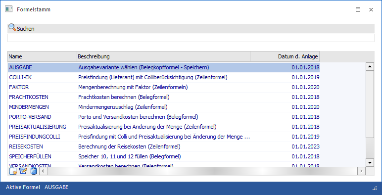
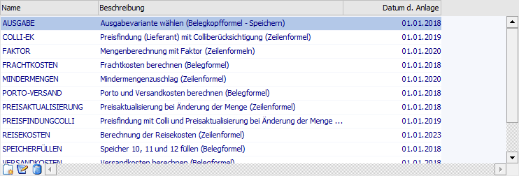
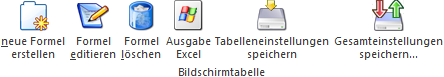
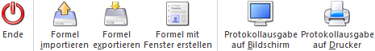
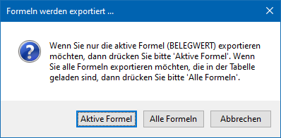
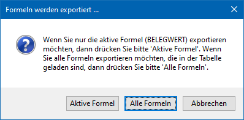

Im Menüpunkt…
1 WinLine FAKT
1 Stammdaten
1 Formelstamm
… können Zeilen-, Beleg- bzw. Belegkopfformeln für die Belegbearbeitung erfasst werden. Informationen zu dem Thema der Formelfunktionen können dabei dem Kapitel Formelfunktionen der WinLine FAKT entnommen werden.
Hinweis
Die Zuweisung von Zeilen- und Belegformeln erfolgt über die Artikelgruppe. Die Belegkopfformel wird wiederum in der Belegart hinterlegt, wobei zwischen Laden und Speichern unterschieden wird.
Achtung
Details zur Formelgestaltung entnehmen Sie bitte den folgenden Kapiteln:
ü Formel-Fenster
Allgemeine
Beschreibung einer Formelerstellung.
ü Formelfunktionen der WinLine
FAKT
Beschreibung der Formelvarianten und der zu nutzen Funktionen und
Variablen.
ü Faktformel
Beschreibung des
optionalen FAKT-Eingabefensters der Belegerfassung.

Suche
Ø Suchbegriff
Mit dem Suchbegriff wird in den Spalten "Name", "Beschreibung", als auch im Formeltext selbst (also dem Inhalt der Formel) gesucht. Wird z.B. "PriceCalculation" als Suchbegriff eingegeben, werden alle Formeln angezeigt, welche eine Preisfindung ausführen.
Tabelle "Suchergebnis"

Nach Aufruf des Fensters werden in der Tabelle alle bereits angelegten Formeln mit dem Formelnamen, der Bezeichnung und dem Anlagedatum angezeigt. Formeln werden in der Tabelle T030CMP in der Systemdatenbank gespeichert.
Tabellenbuttons

Ø neue Formel erstellen
Durch Anklicken des Buttons "neue Formel erstellen" können neue Formeln erstellt werden, wobei die Basisfunktion der Formel bereits eingefügt wird. In der Tabelle wird eine neue Zeile eröffnet, in welcher der Name und die Bezeichnung der Formel hinterlegt werden kann (20stellig alphanumerisch).
Ø Formel editieren
Wenn eine Formel bearbeitet werden soll, so muss die gewünschte Formel in der Tabelle ausgewählt und danach der Button "Formel editieren" angeklickt werden.
Ø Formel löschen
Durch Anklicken des Buttons "Formel löschen" wird die Formel, welche in der Tabelle gerade aktiv ist, gelöscht. Die aktive Formel wird auch in der Statuszeile des Fensters angezeigt.
Ø Ausgabe Excel
Durch Anwahl des Buttons "Ausgabe Excel" wird der Inhalt der Tabelle an Microsoft Excel übergeben.
Ø Tabelleneinstellungen speichern
Die Spalten einer Tabelle können grundsätzlich an beliebige Positionen verschoben, bzw. in der Breite entsprechend angepasst werden. Durch Anwahl des Buttons "Tabelleneinstellungen speichern" werden die Einstellungen benutzerspezifisch gespeichert und bei dem nächsten Aufruf des Programmpunktes wieder vorgeschlagen.
Ø Gesamteinstellungen speichern
Im Gegensatz zu "Tabelleneinstellungen speichern" können mit "Gesamteinstellungen speichern" mehrere Tabellenaufbauten gespeichert und nach Wunsch geladen werden. Zusätzlich werden Sonderfunktionen der Tabelle (z.B. "Spalte gruppieren") ebenfalls bei der Speicherung bedacht.
Buttons

Ø Ende
Durch Anklicken des Buttons "Ende" bzw. der Taste ESC wird das Fenster geschlossen.
Ø Formel importieren
Durch Anklicken des Buttons "Formel importieren" kann eine Formel in das System eingelesen werden. Voraussetzung dafür ist, dass die Formel zuvor auch aus einer WinLine exportiert wurde. Diese Formel muss daher die Dateierweiterung MMR aufweisen.
Hinweis
Ein Import kann auch via Drag & Drop auf das geöffnete Formelfenster erfolgen. Hierdurch ist es möglich, mehrere Formeln in einem Rutsch zu importieren.
Sollte die Formel bereits existieren, wird die Meldung "Das Macro existiert bereits, wollen sie es mit dem importierten überschreiben?" angezeigt. Wenn die Meldung mit "Ja" bestätigt wird, so wird die bestehende Formel überschrieben. Wenn die Meldung hingegen mit "Nein" bestätigt wird, dann wird die Formel nicht exportiert und es wird die Meldung "Es konnten nicht alle Macros importiert werden" ausgegeben.
Ø Formel exportieren
Analog zum Import können Formeln auch exportiert werden. Dies kann zum Zweck von Sicherungen oder zum Datentransfer verwendet werden. Beim Export gibt es ebenfalls zwei Möglichkeiten:
ü Export einer einzelnen
Formel
Zuerst muss aus der Tabelle die Formel gewählt werden, die exportiert
werden soll. Dann muss der Button "Formel exportieren" angeklickt werden. Nun
erhält man die folgende Abfrage:

ü Export mehrerer Formeln
Im
ersten Schritt muss eine Einschränkung der Formeln getroffen werden. Diese
Einschränkung kann über das Feld "Suche" vorgenommen werden, wobei innerhalb der
Formelnamen immer im Volltextmodus gesucht wird (der Suchbegriff wird innerhalb
des ganzen Formelnamen gesucht).
Wenn alle gewünschten Formeln in der Tabelle
angezeigt werden, kann der Button "Formel exportieren" angeklickt werden.
Dadurch wird folgende Meldung angezeigt:

Hinweis
Enthält der Name der zu exportierenden Formel Sonderzeichen (wie z.B. "/<>|*") so werden diese durch das Zeichen "_" ersetzt.
Ø Formel mit Fenster erstellen
Mit dieser Option kann eingestellt werden, welche Art von Formel erstellt werden soll. Standardmäßig ist nur die Option "ohne " vorhanden. Wird aber die Corporate WinLine eingesetzt, steht auch die Option "mit"
zur Verfügung. Damit können dann eigene Fenster und Funktionen programmiert werden.
Hinweis
Nähere Informationen diesbezüglich erhalten Sie bei Ihrem mesonic-Fachhändler.
Ø Protokollausgabe auf Bildschirm
Mit Hilfe des Buttons "Protokollausgabe auf Bildschirm" oder der Taste F5 wird der Inhalt der markierten oder aller Formeln der Tabelle am Bildschirm ausgegeben.
Ø Protokollausgabe auf Drucker
Mit Hilfe des Buttons "Protokollausgabe auf Drucker" wird der Inhalt der markierten oder aller Formeln auf den Drucker ausgegeben.